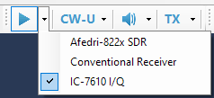
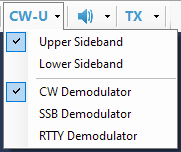
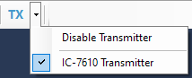
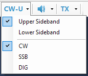

DSP Pipeline
The plugins that perform digital signal processing are organized in a DSP Pipeline.
When working with the SDR radios and other devices that produce wideband quadrature (I/Q) signals, the pipeline looks like this:
- Signal source receives I/Q data from an external device and controls the radio settings. Example: IC-7610 I/Q plugin.
- I/Q processors process I/Q data received from the signal source.
- Demodulator converts I/Q data to the audio suitable for listening.
- Audio processors process demodulated audio in different ways. Examples are Bandpass Filter and AGC plugins.
- Audio Output sends processed audio to a soundcard or another device.
- Transmitter controls the transmit frequency, Split mode and T/R switch in the transmitter.
If the radio outputs already demodulated signals, such as audio output of the conventional transceivers, the pipeline includes only a subset of stages:
- Signal source receives audio data from an external device and controls the radio settings. Example: Conventional Receiver plugin.
- Audio processors
- Audio Output
- Transmitter
The DSP Pipeline is represented visually with a toolstrip on the program toolbar. By clicking on the toolbar buttons, the user can start and stop the signal source, turn the audio on and off and switch the radio to the RX or TX mode.
The drop-down lists attached to the buttons allow the user to select the signal source

demodulator

and transmitter

In case of an audio data source, the program receives audio signals already demodulated in the receiver. When such signal source is selected, the demodulator plugins are not used, and the Mode dropdown list has commands to change the mode in the radio via its CAT interface:
